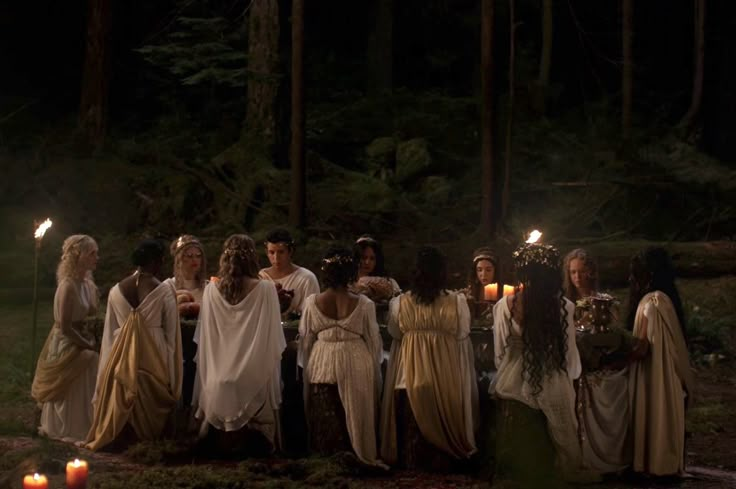

by Antler Queen
Cooking time: overnight
Halvah wafer apple pie tootsie roll carrot cake. Cookie ice cream candy canes danish sweet. Jelly-o tiramisu sweet roll brownie gummies chocolate bar chocolate. Chocolate cake cake shortbread liquorice wafer pastry. Gummies pudding carrot cake tart shortbread.
